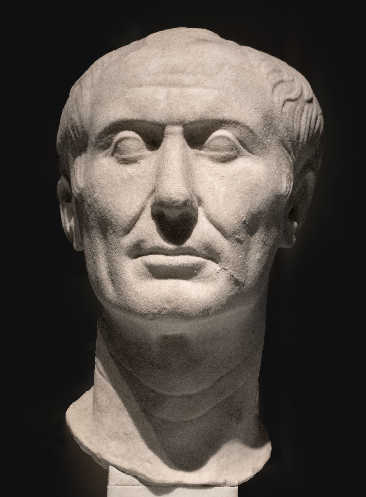
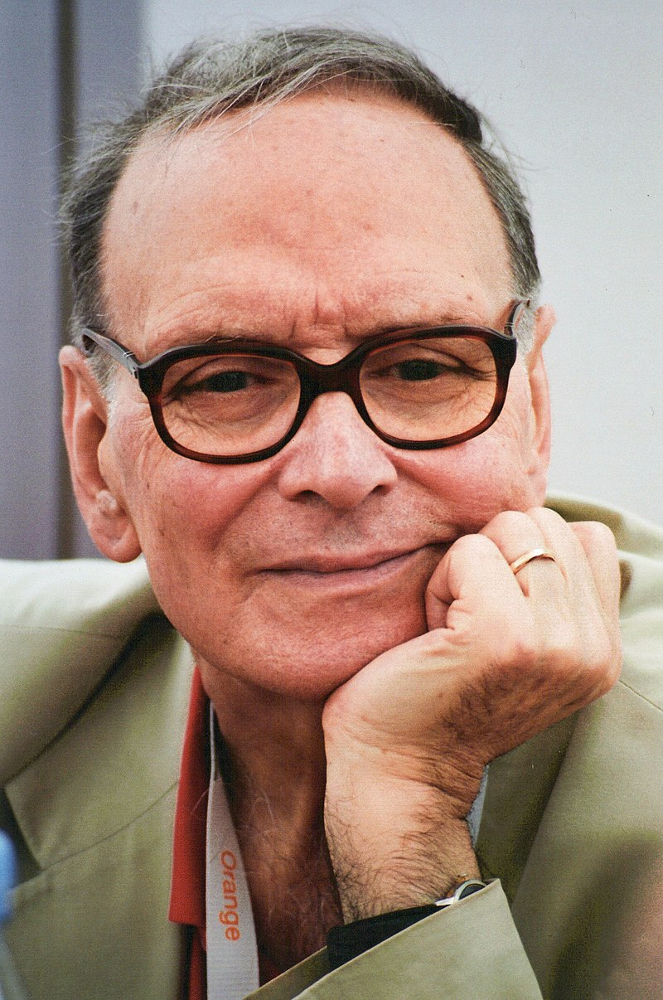

Rome is the third largest metropolitan area in Italy, and as such, it is home to many renown people, such as politicians, musicians or filmakers.
Javier Lodeiro
19/10/2022
We cannot mention Roman people without talking about him. His name is known across all continents, his feats still influencing us today, and his life continues being a study subject. Julius Caesar was a general and politician, one of the best military commanders in ancient Rome, and one of the most loved politicians. He introduced incredibly progressive reforms for the general populace, which saw his popularity absolutely soar, and ending up as perpetual dictator. But this angered the Roman elites, which would end up in his assassination by a group of rebellious senators.
Bust of Julius Caesar
Ennio Morricone was a musician, orchestra conductor and composer. His long and prolific career included composing the soundtracks of many 60s films, mostly spaghetti westerns such as A Fistful of Dollars, The Hateful Eight and the most known of them all, The Good, the Bad and the Ugly. This latter one is one of the most iconic soundtracks ever produced. He lived in the neighbourhood of Trastevere, which he loved and made songs about, and even was a classmate of film director and close friend Sergio Leone
Portrait of Ennio Morricone
Augustus was the great nephew of Julius Caesar, and he was named in his will as his adopted son and heir. This granted him the support of the roman legions, which were loyal to Caesar. After defeating the assassins of his great uncle, he went on to establish the Roman Empire, as first emperor. He is widely regarded as the best Roman emperor, having expanded the empire massively and bringing estability. Some of his feats include annexing Egypt, large amounts of the Balkans and completing the conquest of Hispania.

Statue of Augustus
copyright paragraph (not finished yet)